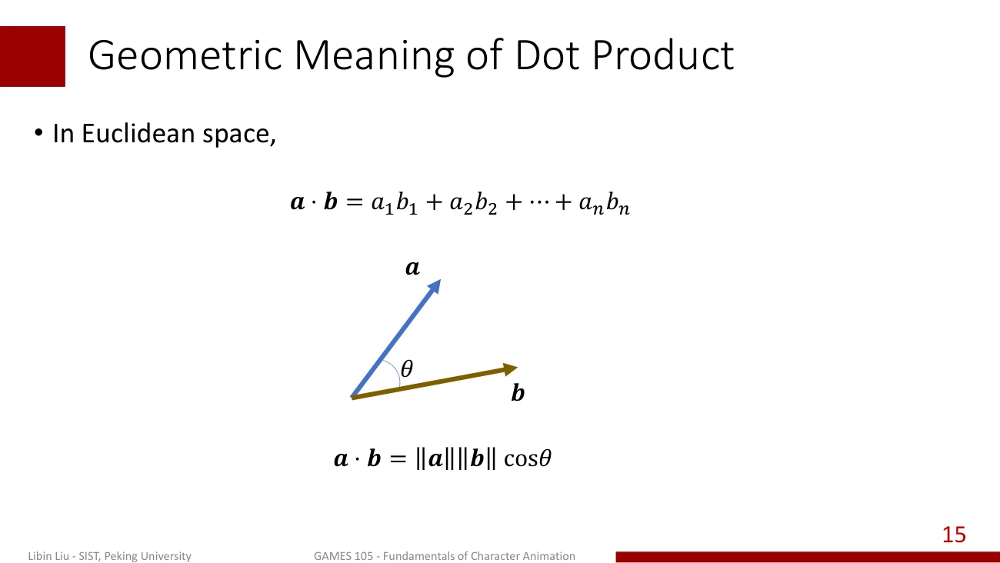
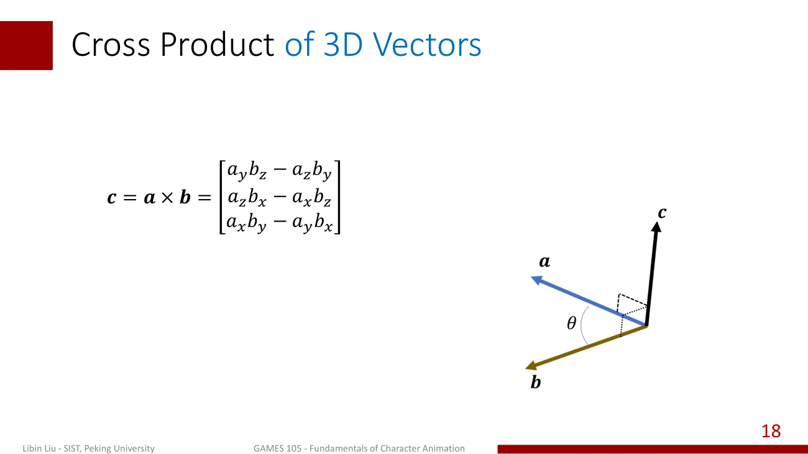
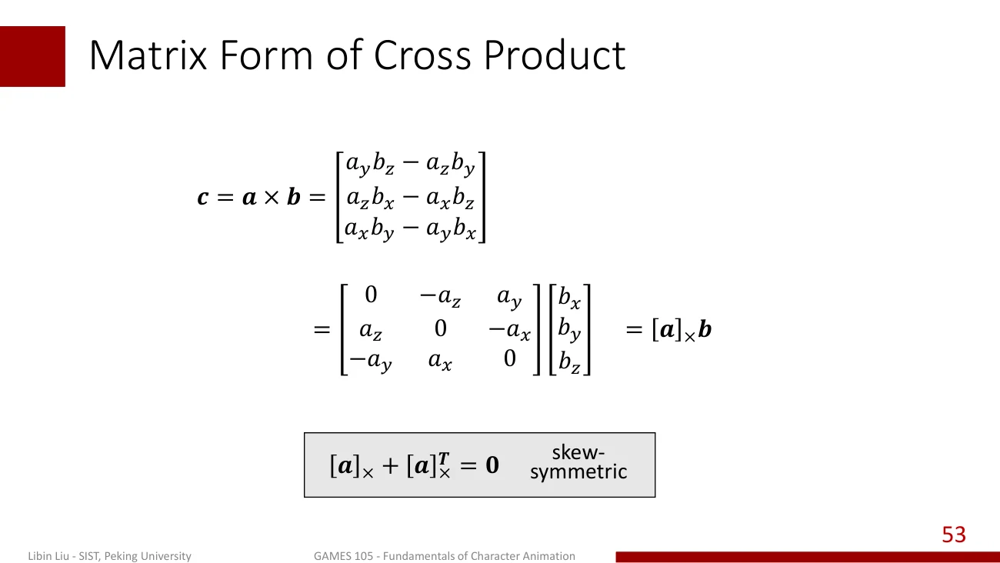
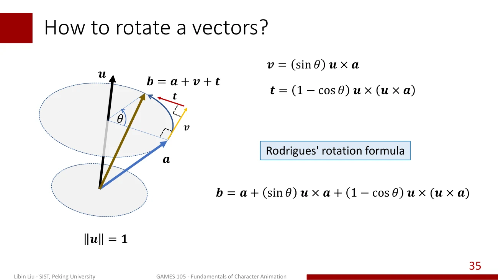
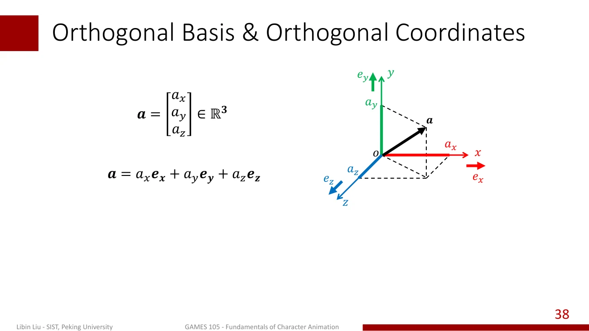
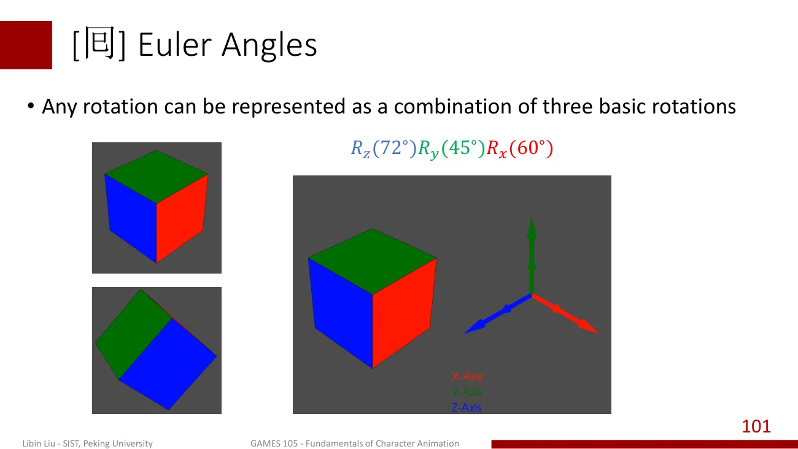
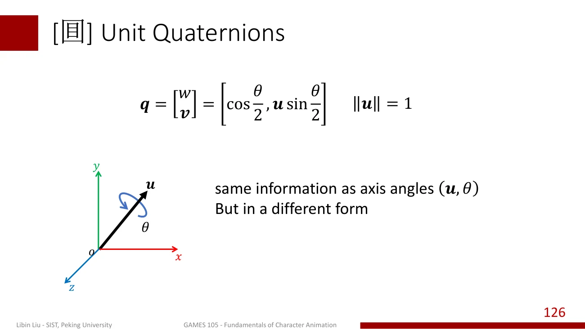
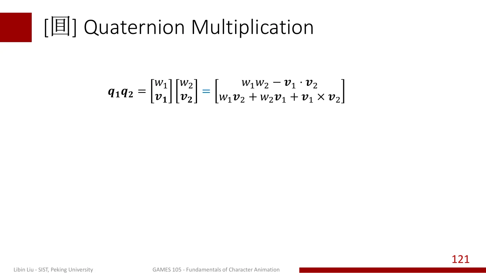
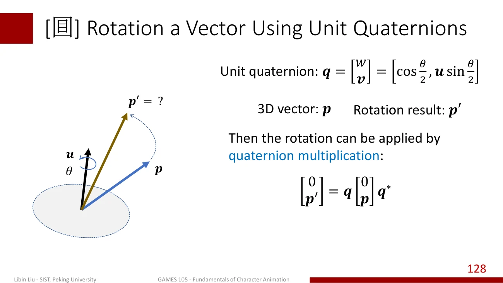
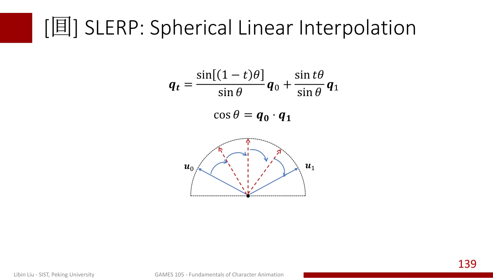

第 2 讲：线性代数复习——从向量、矩阵到四元数旋转
把角色动画里天天要用的向量、矩阵、旋转表示与插值一次性讲透
◆ 学完这一讲，你应该能
能说明向量点积、叉积的几何意义，并用它们求夹角、投影、旋转轴
能写出 Rodrigues 旋转公式，并解释它如何把轴角变成旋转矩阵
能区分旋转矩阵、欧拉角、轴角、四元数四种旋转表示的优缺点
能解释为什么旋转矩阵不能直接线性插值，以及 SLERP 如何解决
能在 UE/Unity 中找到与这些数学概念对应的类型和函数
核心结论速记
向量点积给出夹角余弦与投影长度，叉积给出垂直于两向量的轴，两者是旋转计算的基础。
绕单位轴 u 旋转 θ 的矩阵可用 Rodrigues 公式 R = I + sinθ [u]× + (1-cosθ)[u]ײ 构造。
旋转矩阵是正交矩阵且行列式为 1，逆等于转置，组合旋转就是矩阵相乘。
欧拉角直观但有万向锁和约定依赖问题；轴角紧凑但表示不唯一；四元数无万向锁且适合插值。
单位四元数 q = (cos(θ/2), u sin(θ/2)) 与轴角一一对应，旋转向量用 p' = q p q*。
旋转不能直接线性插值，SLERP 在单位四元数球面上沿大圆插值，保证角速度恒定。
011. 向量：既有大小又有方向
向量（vector）是既有大小（magnitude）又有方向（direction）的量。在角色动画里，它既可以表示位置、速度，也可以表示抽象的方向，比如骨骼的朝向、关节的旋转轴。
表示：在笛卡尔坐标系中，三维向量写成三个分量的列向量： \[ \mathbf{a} = \begin{bmatrix} a_x \\ a_y \\ a_z \end{bmatrix} \] 它的长度（模）为 \( \|\mathbf{a}\| = \sqrt{a_x^2 + a_y^2 + a_z^2} \)。
运算：向量加法逐分量相加，数乘逐分量缩放。这些运算满足交换律、结合律，几何上就是平行四边形法则。
点积（dot product）：\( \mathbf{a}\cdot\mathbf{b} = a_x b_x + a_y b_y + a_z b_z \)。几何意义是 \( \mathbf{a}\cdot\mathbf{b} = \|\mathbf{a}\|\|\mathbf{b}\|\cos\theta \)，其中 θ 是两向量夹角。由此可得：
- 求夹角：\( \theta = \arccos\left(\frac{\mathbf{a}\cdot\mathbf{b}}{\|\mathbf{a}\|\|\mathbf{b}\|}\right) \)
- 求投影长度：\( \|\mathbf{b}\|\cos\theta = \frac{\mathbf{a}\cdot\mathbf{b}}{\|\mathbf{a}\|} \)
叉积（cross product）：仅三维向量有叉积，结果是一个新向量： \[ \mathbf{c} = \mathbf{a}\times\mathbf{b} = \begin{bmatrix} a_y b_z - a_z b_y \\ a_z b_x - a_x b_z \\ a_x b_y - a_y b_x \end{bmatrix} \] 它垂直于 a 和 b，方向由右手定则决定，长度为 \( \|\mathbf{a}\|\|\mathbf{b}\|\sin\theta \)。叉积不满足交换律：\( \mathbf{a}\times\mathbf{b} = -\mathbf{b}\times\mathbf{a} \)。
这两个运算在动画里无处不在：点积用来判断朝向、计算光照；叉积用来求旋转轴、构建局部坐标系。


常见坑
法线未归一化 → 点积结果不是余弦值，光照/夹角计算全错 → 参与点积前先 normalize。
叉积顺序写反 → 旋转轴方向反了，旋转方向相反 → 记住 a×b = -b×a，按右手定则检查。
UE / Unity 落地
UE 中 FVector 提供 DotProduct、CrossProduct 静态函数，蓝图节点也有对应。
Unity 中 Vector3.Dot、Vector3.Cross 直接对应，注意 Unity 是左手坐标系，叉积方向与右手系相反。
点积与叉积的 C++ 实现（cpp）
struct Vec3 { float x, y, z; };
float dot(Vec3 a, Vec3 b) { return a.x*b.x + a.y*b.y + a.z*b.z; }
Vec3 cross(Vec3 a, Vec3 b) {
return { a.y*b.z - a.z*b.y,
a.z*b.x - a.x*b.z,
a.x*b.y - a.y*b.x };
}
float length(Vec3 v) { return sqrtf(dot(v, v)); }
Vec3 normalize(Vec3 v) { float l = length(v); return {v.x/l, v.y/l, v.z/l}; }022. 矩阵：旋转与变换的载体
矩阵（matrix）是二维数组。在图形学里，我们主要用 3×3 矩阵表示旋转/缩放，用 4×4 矩阵表示包含平移的仿射变换。
基本运算：
- 转置（transpose）：\( (A^T)_{ij} = A_{ji} \)，行列互换。
- 数乘与加法：逐元素进行。
- 矩阵乘法：\( (AB)_{ij} = \sum_k A_{ik} B_{kj} \)，要求左矩阵列数等于右矩阵行数。
矩阵乘法不满足交换律：\( AB \neq BA \)。这直接对应“先旋转再平移”和“先平移再旋转”结果不同。但它满足结合律：\( (AB)C = A(BC) \)，所以组合变换可以预先乘成一个矩阵。
特殊矩阵：
- 单位矩阵 I：对角为 1，其余为 0，\( IA = AI = A \)。
- 正交矩阵：\( A^T A = A A^T = I \)，即 \( A^{-1} = A^T \)。旋转矩阵就是正交矩阵。
- 行列式（determinant）：记为 det(A)。性质：\( \det(AB) = \det(A)\det(B) \)，\( \det(A^T) = \det(A) \)。旋转矩阵行列式为 1。
用矩阵表示点积与叉积：
- 点积可写成 \( \mathbf{a}\cdot\mathbf{b} = \mathbf{a}^T \mathbf{b} \)。
- 叉积可写成矩阵乘向量：\( \mathbf{a}\times\mathbf{b} = [\mathbf{a}]_\times \mathbf{b} \)，其中 \( [\mathbf{a}]_\times \) 是反对称矩阵（skew-symmetric）： \[ [\mathbf{a}]_\times = \begin{bmatrix} 0 & -a_z & a_y \\ a_z & 0 & -a_x \\ -a_y & a_x & 0 \end{bmatrix} \] 这个写法在推导旋转公式时非常方便。

常见坑
矩阵乘法顺序搞反 → 变换结果与预期不符 → 记住列向量右乘：先应用的变换在右边。
把正交矩阵的转置当成普通转置 → 忘记它同时是逆矩阵 → 旋转矩阵求逆直接转置即可。
UE / Unity 落地
UE 中 FMatrix 是 4×4 矩阵，FMatrix::GetTransposed 求转置，FMatrix::Inverse 求逆。
Unity 中 Matrix4x4 提供 transpose、inverse 属性，注意 Unity 用列向量右乘。
033. 旋转的轴角表示与 Rodrigues 公式
给定两个向量 a 和 b，如何求把 a 转到 b 的旋转？
旋转轴：取叉积方向 \( \mathbf{u} = \frac{\mathbf{a}\times\mathbf{b}}{\|\mathbf{a}\times\mathbf{b}\|} \)。注意，任何在 a、b 角平分面内的向量都可以作为轴，但最小旋转对应的轴就是叉积方向。
旋转角：\( \theta = \arccos\left(\frac{\mathbf{a}\cdot\mathbf{b}}{\|\mathbf{a}\|\|\mathbf{b}\|}\right) \)。
如何旋转一个向量：把向量 a 绕单位轴 u 旋转 θ 得到 b。推导思路是把 a 分解为沿 u 的分量和垂直于 u 的分量，垂直分量在垂直于 u 的平面内旋转。最终得到 Rodrigues 旋转公式（Rodrigues' rotation formula）： \[ \mathbf{b} = \mathbf{a} + \sin\theta\,(\mathbf{u}\times\mathbf{a}) + (1-\cos\theta)\,\mathbf{u}\times(\mathbf{u}\times\mathbf{a}) \] 写成矩阵形式： \[ R = I + \sin\theta\,[\mathbf{u}]_\times + (1-\cos\theta)\,[\mathbf{u}]_\times^2 \] 其中 \( [\mathbf{u}]_\times \) 是 u 的反对称矩阵。这个公式把轴角 \( (\mathbf{u}, \theta) \) 直接变成旋转矩阵 R，是后面所有旋转表示互转的核心。
几何直觉：第一项是原向量；第二项沿切向“推”一把，大小 sinθ；第三项沿径向“拉”回来，大小 (1-cosθ)，保证结果落在圆上。

常见坑
轴 u 没有归一化 → 公式里 sinθ、cosθ 的尺度不对，旋转结果错误 → 使用前必须 normalize。
a 与 b 平行时叉积为零 → 轴无法确定 → 需要特判：同向不旋转，反向任选垂直轴旋转 180°。
UE / Unity 落地
UE 中 FRotator 转 FQuat 再转 FMatrix 内部就是走轴角/四元数路线，一般不直接手写 Rodrigues。
Unity 中 Quaternion.AngleAxis(angle, axis) 等价于轴角构造，内部用四元数实现。
Rodrigues 公式：轴角转旋转矩阵（3×3）（cpp）
Mat3 rodrigues(Vec3 u, float theta) {
u = normalize(u);
float c = cosf(theta), s = sinf(theta);
Mat3 K = { {0, -u.z, u.y}, {u.z, 0, -u.x}, {-u.y, u.x, 0} };
Mat3 K2 = K * K;
Mat3 R;
for (int i = 0; i < 3; ++i)
for (int j = 0; j < 3; ++j)
R[i][j] = (i==j?1:0) + s*K[i][j] + (1-c)*K2[i][j];
return R;
}044. 正交基与坐标变换
正交基（orthogonal basis）是一组两两垂直、长度为 1 的基向量 \( \mathbf{e}_x, \mathbf{e}_y, \mathbf{e}_z \)。任何向量都可以写成它们的线性组合： \[ \mathbf{a} = a_x \mathbf{e}_x + a_y \mathbf{e}_y + a_z \mathbf{e}_z \] 系数 \( (a_x, a_y, a_z) \) 就是 a 在该基下的坐标。因为基是正交归一的，坐标可以通过点积直接求出：\( a_x = \mathbf{a}\cdot\mathbf{e}_x \)，等等。
坐标变换：同一个向量在不同坐标系下坐标不同。如果物体坐标系到全局坐标系的旋转矩阵为 R（其列向量是物体轴在全局系下的方向），那么：
- 物体坐标转全局坐标：\( \mathbf{a}_{global} = R\,\mathbf{a}_{local} \)
- 全局坐标转物体坐标：\( \mathbf{a}_{local} = R^T\,\mathbf{a}_{global} \)（因为 R 正交）
这就是为什么旋转矩阵的列可以理解为“局部坐标轴在父空间中的方向”。在角色动画里，骨骼的局部变换、父子空间转换都依赖这个性质。

常见坑
基向量不正交 → 不能简单用点积求坐标 → 需要求逆矩阵或解线性方程组。
混淆行向量与列向量约定 → 坐标变换方向搞反 → 统一约定：列向量右乘，R 的列是局部轴在全局的方向。
UE / Unity 落地
UE 中 FMatrix 的列向量就是局部轴方向，TransformVector 做局部到全局，InverseTransformVector 做反向。
Unity 中 transform.TransformPoint / InverseTransformPoint 完成局部与全局坐标转换。
055. 旋转的四种表示：矩阵、欧拉角、轴角、四元数
同一个三维旋转有很多种表示方式，课件对比了四种，每种都有取舍。
旋转矩阵（rotation matrix）：3×3 正交矩阵，行列式为 1。优点是组合旋转就是矩阵乘法，应用旋转就是矩阵乘向量，非常方便；缺点是 9 个参数只有 3 个自由度，冗余大，且不能直接线性插值。
欧拉角（Euler angles）：用绕三个坐标轴的转角 \( (\alpha, \beta, \gamma) \) 表示，如 \( R = R_z(\gamma) R_y(\beta) R_x(\alpha) \)。优点是直观、参数少；缺点是有约定依赖（XYZ、ZYX 等 12 种顺序）、万向锁（gimbal lock）——当两个旋转轴平行时丢失一个自由度。
轴角（axis-angle）：用单位轴 u 和角 θ 表示。优点是几何意义明确；缺点是表示不唯一（\( (\mathbf{u}, \theta) \) 与 \( (-\mathbf{u}, -\theta) \) 等价，且 θ 可加 2π 的整数倍），插值也麻烦。
四元数（quaternion）：用 4 个数 \( q = (w, \mathbf{v}) \) 表示，单位四元数对应旋转。优点是无万向锁、插值平滑（SLERP）、组合方便；缺点是不够直观，需要理解其代数规则。
在角色动画里，四元数几乎是旋转插值的标准表示，而矩阵用于最终变换计算，欧拉角只在 UI 和动画曲线里出现。


常见坑
欧拉角顺序不统一 → 同一个角度值得到不同姿态 → 明确约定旋转顺序（如 UE 的 FRotator 是 ZYX）。
轴角插值直接线性插值角度 → 旋转轴可能突变 → 改用四元数 SLERP。
UE / Unity 落地
UE 中 FRotator 是欧拉角（Pitch/Yaw/Roll），FQuat 是四元数，FTransform 内部用四元数。
Unity 中 Transform.eulerAngles 是欧拉角，Transform.rotation 是四元数，Quaternion.Euler 做转换。
066. 四元数：定义、运算与旋转
四元数（quaternion）是复数的推广： \[ q = w + x\mathbf{i} + y\mathbf{j} + z\mathbf{k} \] 其中 \( \mathbf{i}^2 = \mathbf{j}^2 = \mathbf{k}^2 = \mathbf{ijk} = -1 \)，且乘法不满足交换律。常写成标量-向量形式 \( q = (w, \mathbf{v}) \)。
基本运算：
- 共轭：\( q^* = (w, -\mathbf{v}) \)
- 模长：\( \|q\| = \sqrt{w^2 + \|\mathbf{v}\|^2} \)
- 逆：\( q^{-1} = q^* / \|q\|^2 \)，单位四元数 \( q^{-1} = q^* \)
- 乘法：\( q_1 q_2 = (w_1 w_2 - \mathbf{v}_1\cdot\mathbf{v}_2,\; w_1\mathbf{v}_2 + w_2\mathbf{v}_1 + \mathbf{v}_1\times\mathbf{v}_2) \)
单位四元数表示旋转：绕单位轴 u 旋转 θ 对应 \[ q = \left(\cos\frac{\theta}{2},\; \mathbf{u}\sin\frac{\theta}{2}\right) \] 注意角度是半角。旋转一个三维向量 p（写成纯四元数 \( (0, \mathbf{p}) \)）： \[ p' = q\, p\, q^* \] 组合旋转：先 q1 再 q2 对应 \( q = q_2 q_1 \)（注意顺序）。
为什么用四元数：没有万向锁；单位四元数只有 4 个参数、3 个自由度，冗余比矩阵小；插值可以在 4D 单位球面上做 SLERP，得到恒定角速度的平滑旋转。


常见坑
四元数没归一化 → 旋转矩阵带缩放，物体变形 → 使用前 normalize。
组合顺序搞反 → 旋转结果与预期相反 → 记住 q = q2 * q1 表示先 q1 后 q2。
把 θ 直接写进 cos/sin → 旋转角度翻倍 → 四元数用半角 θ/2。
UE / Unity 落地
UE 中 FQuat 提供 FQuat(Axis, Angle) 构造，FQuat::operator* 组合旋转。
Unity 中 Quaternion.AngleAxis、Quaternion.LookRotation 直接构造四元数。
单位四元数旋转向量（cpp）
struct Quat { float w, x, y, z; };
Vec3 rotate(Quat q, Vec3 p) {
// p' = q * (0,p) * q*
Quat qp = {0, p.x, p.y, p.z};
Quat qc = {q.w, -q.x, -q.y, -q.z};
Quat r = quatMul(quatMul(q, qp), qc);
return {r.x, r.y, r.z};
}077. 旋转插值：为什么不能直接线性插值，SLERP 怎么做
动画里经常需要在两个旋转之间过渡。平移可以直接线性插值：\( \mathbf{x}(t) = (1-t)\mathbf{x}_0 + t\mathbf{x}_1 \)。但旋转不行。
直接线性插值旋转矩阵：\( R(t) = (1-t)R_0 + tR_1 \) 一般不再是旋转矩阵（不正交），会导致缩放/剪切。
直接线性插值四元数：\( q(t) = (1-t)q_0 + tq_1 \) 一般不是单位四元数，需要再归一化（nlerp），但角速度不恒定。
SLERP（球面线性插值）：在单位四元数球面上沿大圆插值： \[ q(t) = \frac{\sin((1-t)\theta)}{\sin\theta} q_0 + \frac{\sin(t\theta)}{\sin\theta} q_1 \] 其中 \( \cos\theta = q_0\cdot q_1 \)。它保证任意 t 都是单位四元数，且角速度恒定。
注意：四元数 q 与 -q 表示同一旋转，插值前要选符号使点积为正，否则会走远路。

常见坑
四元数插值未处理 q 与 -q → 旋转绕远路甚至翻转 → 插值前检查点积，若为负则取反一个四元数。
用 nlerp 代替 SLERP 且不归一化 → 旋转速度不均、模长漂移 → 至少每帧归一化，或直接用 SLERP。
UE / Unity 落地
UE 中 FQuat::Slerp 提供球面插值，FQuat::FastLerp 是 nlerp。
Unity 中 Quaternion.Slerp 是标准插值，Quaternion.Lerp 是 nlerp。
SLERP 伪代码（cpp）
Quat slerp(Quat q0, Quat q1, float t) {
float d = dot(q0, q1);
if (d < 0) { q1 = -q1; d = -d; }
if (d > 0.9995f) return normalize(lerp(q0, q1, t));
float theta = acosf(d);
float s0 = sinf((1-t)*theta) / sinf(theta);
float s1 = sinf(t*theta) / sinf(theta);
return q0*s0 + q1*s1;
}引擎对照表
| 概念 / 效果 | Unreal Engine | Unity |
|---|---|---|
三维向量 | FVector | Vector3 |
旋转（四元数） | FQuat | Quaternion |
欧拉角 | FRotator (Pitch/Yaw/Roll) | Vector3 eulerAngles |
4×4 变换矩阵 | FMatrix | Matrix4x4 |
球面插值 | FQuat::Slerp | Quaternion.Slerp |
轴角构造旋转 | FQuat(Axis, Angle) | Quaternion.AngleAxis |
术语双语表
| English | 中文 | 说明 |
|---|---|---|
| dot product | 点积 | 两向量对应分量乘积之和，几何上等于模长乘积乘夹角余弦。 |
| cross product | 叉积 | 三维向量特有的运算，结果垂直于原两向量，方向由右手定则决定。 |
| Rodrigues' rotation formula | 罗德里格斯旋转公式 | 用轴和角直接构造旋转矩阵的公式。 |
| orthogonal matrix | 正交矩阵 | 满足 A^T A = I 的矩阵，逆等于转置，旋转矩阵是正交矩阵。 |
| Euler angles | 欧拉角 | 用绕三个坐标轴的转角表示旋转，直观但有万向锁问题。 |
| gimbal lock | 万向锁 | 欧拉角中两个旋转轴平行导致丢失一个自由度。 |
| quaternion | 四元数 | 形如 w + xi + yj + zk 的数，单位四元数可表示三维旋转。 |
| SLERP | 球面线性插值 | 在单位球面上沿大圆插值，保证角速度恒定。 |
| skew-symmetric matrix | 反对称矩阵 | 满足 A^T = -A 的矩阵，叉积可写成反对称矩阵乘向量。 |
课后练习
01 已知 a = (1, 0, 0)，b = (0, 1, 0)，求 a·b、a×b，并说明叉积结果的几何意义。
查看答案
提示：
直接套公式。
a·b = 10 + 01 + 00 = 0，说明两向量垂直。a×b = (00-01, 00-10, 11-0*0) = (0, 0, 1)，即 z 轴正方向，垂直于 a 和 b，符合右手定则。
02 用 Rodrigues 公式写出绕 z 轴旋转 θ 的旋转矩阵，并与标准 Rz(θ) 对比。
查看答案
提示：
u = (0,0,1)，代入 R = I + sinθ [u]× + (1-cosθ)[u]ײ。
u = (0,0,1)，[u]× = [[0,-1,0],[1,0,0],[0,0,0]]，[u]ײ = [[-1,0,0],[0,-1,0],[0,0,0]]。代入得 R = [[cosθ, -sinθ, 0],[sinθ, cosθ, 0],[0,0,1]]，正是标准 Rz(θ)。
03 为什么旋转矩阵不能直接线性插值？四元数直接线性插值有什么问题？
查看答案
提示：
考虑正交性和单位模长。
旋转矩阵线性插值后一般不满足正交性，会产生缩放/剪切。四元数线性插值后一般不是单位四元数，需要归一化；即使归一化（nlerp），角速度也不恒定，插值路径不是大圆。SLERP 在单位球面上沿大圆插值，保证单位模长和恒定角速度。
04 在 UE 中，如何把一个 FRotator 转成 FQuat 再做 SLERP？写出关键代码。
查看答案
提示：
FRotator::Quaternion() 和 FQuat::Slerp。
FQuat q0 = Rotator0.Quaternion(); FQuat q1 = Rotator1.Quaternion(); FQuat q = FQuat::Slerp(q0, q1, t); 注意 Slerp 内部会处理符号，但自定义插值时需检查点积。